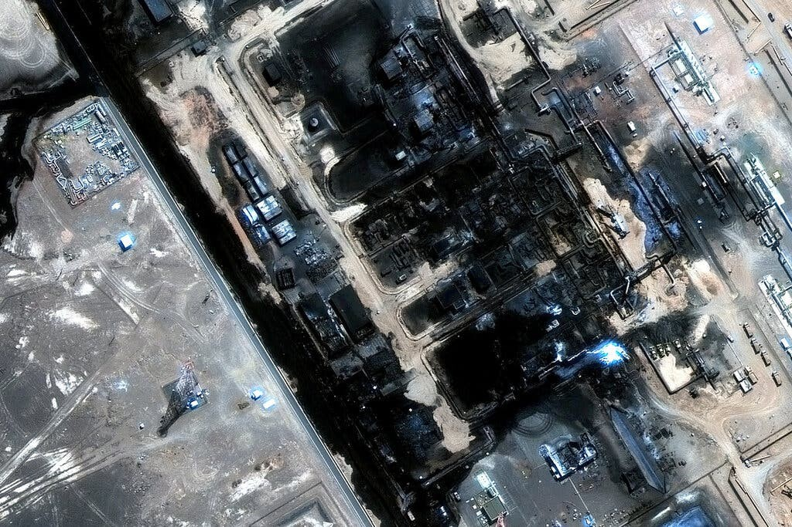
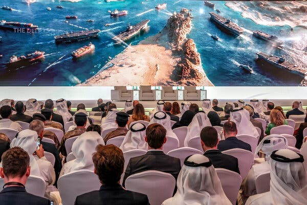
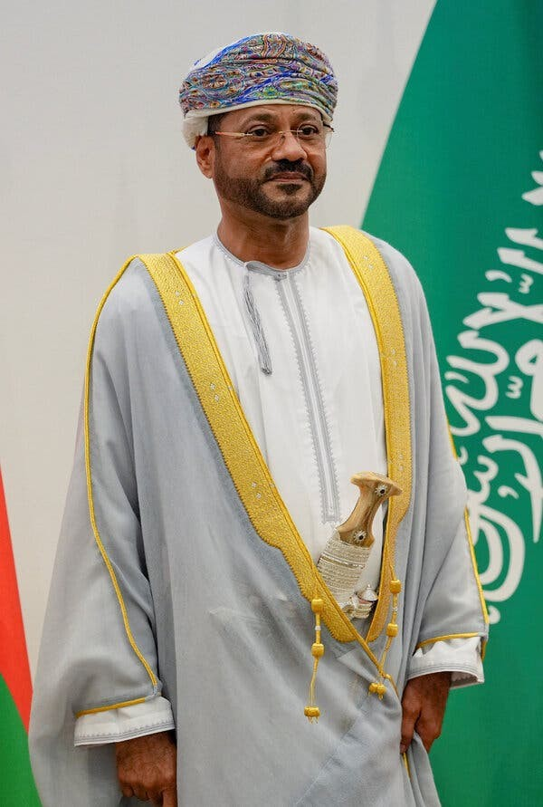

Gulf Arab countries have long relied for their security on the U.S. military bases that they host.
But after six months of war, the repeated pummeling of those countries by Iranian missiles and drones has made the limitations of American security guarantees abundantly clear.
Iran and its allies have nearly destroyed some of the U.S. bases, set luxury hotels ablaze and, most recently, knocked offline one of the most critical pieces of energy infrastructure in the world, an oil pipeline that stretches across Saudi Arabia.
Their backs against a wall, Gulf Arab officials are now trying to cobble together different ways to avoid attacks by Iran and its allies, including direct diplomacy with the Islamic Republic.
Even that option faces challenges. On Sunday night, a meeting that was scheduled for Monday between Iran and the Gulf Arab states was abruptly postponed. The delay came after Saudi Arabia and Iran reached an impasse in discussions about the Strait of Hormuz — a crucial route for Gulf energy exporters — according to a senior Gulf official, who spoke on the condition of anonymity to discuss sensitive diplomacy.
Analysts say the region’s leaders have no choice but to seek different security options after the U.S.-Israeli war with Iran exposed the vulnerabilities of the Gulf Arab countries and emboldened the Islamic Republic.
“We’re stuck in this position of trying to build something new while maintaining some of the old,” said Bader Al-Saif, an assistant professor of history at Kuwait University. “We need to snap out of this external protector syndrome.”
The island nation of Bahrain, for example, has been host to a major American naval base for decades in the hopes of protecting itself from Iran. But as in other Gulf countries, the base became a target, instead.

The base was nearly destroyed in February, on the first day of Iran’s retaliatory attacks against the assault launched by the United States and Israel. Most of the sailors stationed there were evacuated to Florida, leaving a skeleton crew, according to a U.S. military official, who spoke on the condition of anonymity to discuss operational matters.
Some sailors in Bahrain were evacuated so rapidly that the U.S. Navy is still trying to reunite them with their belongings, Adm. Daryl Caudle, chief of naval operations, said at a recent town hall meeting. It is unclear when they will return, he said.
For the United States and its allies in the Middle East, the war has incurred steep costs. Iran’s effective closure of the Strait of Hormuz represents a major strategic failure and an economic setback for Gulf energy exporters. The inability of U.S. forces to fend off attacks by Iran is another strategic failure, which could have significant consequences for those countries and for America’s projection of power.
Yet Bahrain and the other Gulf countries, including Saudi Arabia, the United Arab Emirates and Kuwait, have no clear, single alternative to the United States as the guarantor of their security.
Their militaries are smaller and weaker than Iran’s, despite spending hundreds of billions of dollars on advanced weaponry in recent decades, including American F-15 fighter jets and Patriot missile defense systems.
China and Russia have not stepped in to defend the Gulf countries, despite close ties with many of them.
Many Gulf officials are calling for greater regional self-sufficiency in defense. But efforts to bolster regional security — like a new defense pact among Saudi Arabia, Pakistan and Turkey — are unproven. It remains unclear whether any of these countries will be willing and able to come to each other’s aid.
The most realistic option for Gulf countries is to build defense partnerships that will “supplement, rather than replace, the U.S. security umbrella,” said Yasmine Farouk, Gulf and Arabian Peninsula project director at the International Crisis Group.
Gulf analysts and officials say that without U.S. assistance and American weaponry, such as air defenses, the damage to the Gulf states would have been far worse. Dozens of people were killed in the Iranian attacks, instead of hundreds or thousands. Flights carrying tourists and businesspeople were canceled and delayed but have started to resume.

Still, Iran’s campaign wreaked havoc on the energy-rich economies of the Gulf countries, cracking their images as safe havens in a volatile region.
The war proved that the Gulf’s advanced defense systems are not “leak proof,” and that Iran can “impose major costs” on the countries by using large numbers of relatively cheap drones, said Kristian Alexander, a senior fellow at the Rabdan Security & Defence Institute, a government-linked research institution in the United Arab Emirates.
Facing fierce counterattacks from Iran, the United States “prioritized protecting its personnel and defending Israel,” Mr. Alexander added. “These priorities did not always coincide with the Gulf’s needs to protect airports, ports, desalination plants.”
The short supply of U.S. missile interceptors globally also posed a challenge for the Gulf Arab states in the early weeks of the war, and they have tried to fill the gap by turning to Ukraine and other European countries. But even enhanced air defenses against relatively inexpensive Iranian drones cannot provide complete protection.
Anna Kelly, a White House spokeswoman, said that President Trump is “in constant communication” with regional partners and that the United States “maintains stronger bonds with these countries than ever before.”
She dismissed the idea that American military protection for the Gulf countries has been insufficient, saying that analysts who assert that “are not privy to sensitive diplomatic conversations and have no idea what they are talking about.”
Exploring other ways to improve their security, Gulf Arab officials were scheduled to meet with officials from Iran in Oman on Monday. On the agenda was an Iranian-Omani proposal for shipping operations in the Strait of Hormuz. Iran has choked off much of the traffic in the strait while threatening to introduce a toll or fee system for vessels.
The meeting was called off after Saudi Arabia suggested amendments, including one rejecting an Iranian assertion that the strait is not an international waterway, according to the senior Gulf official. Iran rejected some of the Saudi amendments and asked for more time to review others, the official said.
On Monday, the Iranian foreign ministry spokesman, Esmaeil Baghaei, said the meeting would have been “an opportunity” to “discuss creating a secure region, free from the interference of other actors.” He confirmed that Saudi Arabia had asked for the delay.
No new date has been announced, but analysts said such efforts to address differences though dialogue are likely to continue.
In an essay in a French newspaper, Le Monde, in July, Oman’s foreign minister called for a new multilateral arrangement that would bring the Gulf Arab countries together with Iran and Iraq to share responsibility for the region’s security.

Doing so would require a “clear examination of relations with major partners like the United States” and a rebalancing of the region’s alliances, wrote the minister, Badr al-Busaidi.
Indeed, years before the war, several Gulf countries had pursued a rapprochement with Iran, hoping that an easing of tensions would protect them.
The war initially derailed that effort. Yet months later — for lack of a better option — the Emirates, Saudi Arabia and Qatar have returned to diplomacy, with the aim of gradually rebuilding trust with Iran and fostering shared economic interests that bind their fates.
At a conference early this month, Anwar Gargash, a senior Emirati official, acknowledged that a diplomatic approach was inevitable, regardless of what had transpired.
“Iran remains our neighbor, and at some point we will have to find a way to restore what can be restored,” he said. “Geography leaves us no alternative to engagement.”